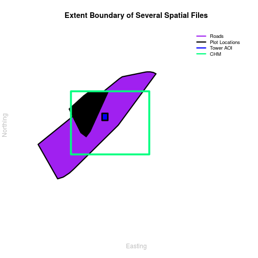
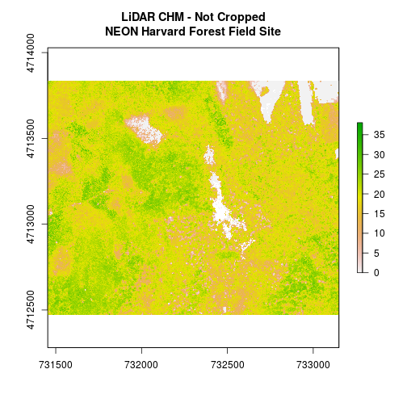
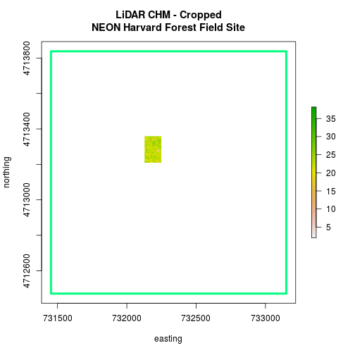
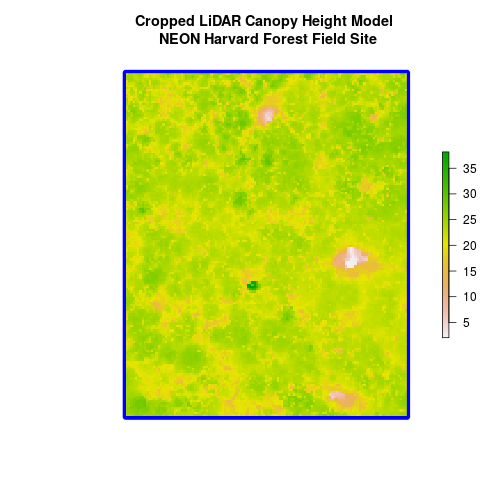
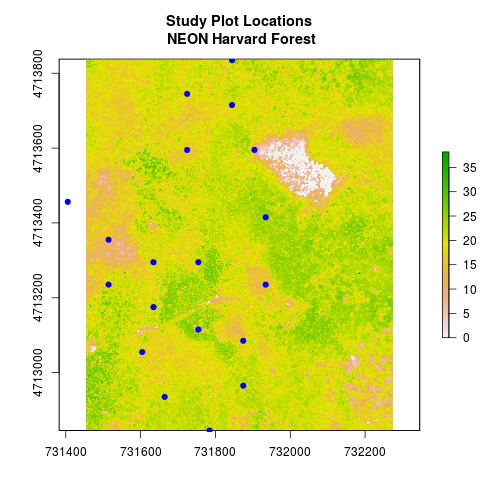
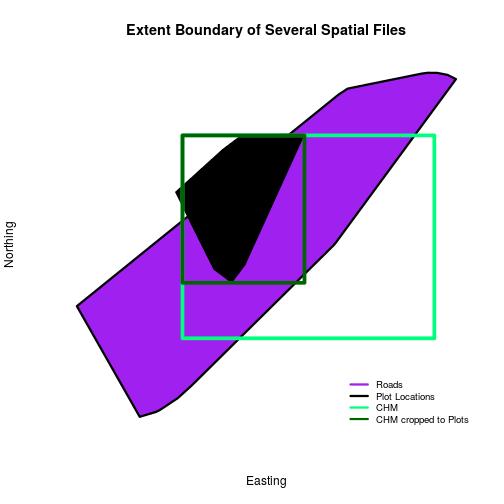
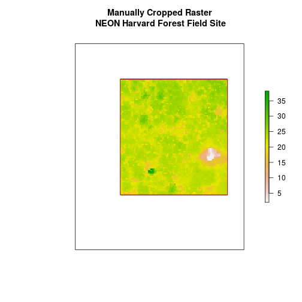
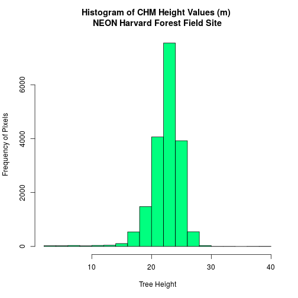
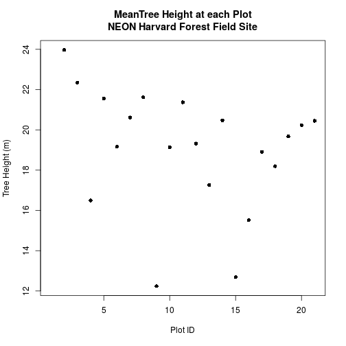

Manipulate Raster Data in R
Authors
Joseph Stachelek, Leah A. Wasser, Megan A. Jones
Overview
Teaching: 10 min
Exercises: 0 minQuestions
How to crop raster layers and extract summary pixels.
Objectives
Be able to crop a raster to the extent of a vector layer.
Be able to extract values from raster that correspond to a vector file overlay.
Things You’ll Need To Complete This Tutorial
R Skill Level: Intermediate - you’ve got the basics of
Rdown. You will need the most current version ofRand, preferably,RStudioloaded on your computer to complete this tutorial.Install R Packages
- raster:
install.packages("raster")sf:
install.packages("sf")- More on Packages in R - Adapted from Software Carpentry.
Download Data
This tutorial explains how to crop a raster using the extent of a vector shapefile. We will also cover how to extract values from a raster that occur within a set of polygons, or in a buffer (surrounding) region around a set of points.
Crop a Raster to Vector Extent
We often work with spatial layers that have different spatial extents.

The graphic below illustrates the extent of several of the spatial layers that we have worked with in this vector data tutorial series:
- Area of interest (AOI) – blue
- Roads and trails – purple
- Vegetation plot locations – black
and a raster file, that we will introduce this tutorial:
- A canopy height model (CHM) in GeoTIFF format – green
Linking to GEOS 3.5.1, GDAL 2.2.1, proj.4 4.9.2, lwgeom 2.3.3 r15473
Loading required package: sp
Reading layer `HarClip_UTMZ18' from data source `/home/jose/Documents/Science/Projects/software-carpentry/data-carpentry_lessons/R-spatial-raster-vector-lesson/_episodes_rmd/data/NEON-DS-Site-Layout-Files/HARV/HarClip_UTMZ18.shp' using driver `ESRI Shapefile'
Simple feature collection with 1 feature and 1 field
geometry type: POLYGON
dimension: XY
bbox: xmin: 732128 ymin: 4713209 xmax: 732251.1 ymax: 4713359
epsg (SRID): 32618
proj4string: +proj=utm +zone=18 +datum=WGS84 +units=m +no_defs
Reading layer `HARV_roads' from data source `/home/jose/Documents/Science/Projects/software-carpentry/data-carpentry_lessons/R-spatial-raster-vector-lesson/_episodes_rmd/data/NEON-DS-Site-Layout-Files/HARV/HARV_roads.shp' using driver `ESRI Shapefile'
Simple feature collection with 13 features and 15 fields
geometry type: MULTILINESTRING
dimension: XY
bbox: xmin: 730741.2 ymin: 4711942 xmax: 733295.5 ymax: 4714260
epsg (SRID): 32618
proj4string: +proj=utm +zone=18 +datum=WGS84 +units=m +no_defs
Reading layer `HARVtower_UTM18N' from data source `/home/jose/Documents/Science/Projects/software-carpentry/data-carpentry_lessons/R-spatial-raster-vector-lesson/_episodes_rmd/data/NEON-DS-Site-Layout-Files/HARV/HARVtower_UTM18N.shp' using driver `ESRI Shapefile'
Simple feature collection with 1 feature and 14 fields
geometry type: POINT
dimension: XY
bbox: xmin: 732183.2 ymin: 4713265 xmax: 732183.2 ymax: 4713265
epsg (SRID): 32618
proj4string: +proj=utm +zone=18 +datum=WGS84 +units=m +no_defs

Frequent use cases of cropping a raster file include reducing file size and creating maps.
Sometimes we have a raster file that is much larger than our study area or area of interest. It is often most efficient to crop the raster to the extent of our study area to keep reduce file sizes as we process our data.
Cropping a raster can also be useful when creating pretty maps so that the raster layer matches the extent of the desired vector layers.
Import Data
We will begin by importing four vector shapefiles (field site boundary, roads/trails, tower location, and veg study plot locations) and one raster GeoTIFF file, a Canopy Height Model for the Harvard Forest, Massachusetts. These data can be used to create maps that characterize our study location.
If you have completed the Vector 00-04 tutorials in this Introduction to Working with Vector Data in R series, you can skip this code as you have already created these object.)
# load necessary packages
library(sf)
library(raster)
# set working directory to data folder
# setwd("pathToDirHere")
# Imported in Vector 00: Vector Data in R - Open & Plot Data
# shapefile
aoi_boundary_HARV <- st_read("data/NEON-DS-Site-Layout-Files/HARV/HarClip_UTMZ18.shp")
# Import a line shapefile
lines_HARV <- st_read("data/NEON-DS-Site-Layout-Files/HARV/HARV_roads.shp")
# Import a point shapefile
point_HARV <- st_read("data/NEON-DS-Site-Layout-Files/HARV/HARVtower_UTM18N.shp")
# Imported in Vector 02: .csv to Shapefile in R
# import raster Canopy Height Model (CHM)
chm_HARV <-
raster("data/NEON-DS-Airborne-Remote-Sensing/HARV/CHM/HARV_chmCrop.tif")
Crop a Raster Using Vector Extent
We can use the crop function to crop a raster to the extent of another spatial
object. To do this, we need to specify the raster to be cropped and the spatial
object that will be used to crop the raster. R will use the extent of the
spatial object as the cropping boundary.
# plot full CHM
plot(chm_HARV,
main = "LiDAR CHM - Not Cropped\nNEON Harvard Forest Field Site")

# crop the chm
chm_HARV_Crop <- crop(x = chm_HARV, y = as(aoi_boundary_HARV, "Spatial"))
# plot full CHM
plot(extent(chm_HARV),
lwd = 4,col = "springgreen",
main = "LiDAR CHM - Cropped\nNEON Harvard Forest Field Site",
xlab = "easting", ylab = "northing")
plot(chm_HARV_Crop,
add = TRUE)

We can see from the plot above that the full CHM extent (plotted in green) is
much larger than the resulting cropped raster. Our new cropped CHM now has the
same extent as the aoi_boundary_HARV object that was used as a crop extent
(blue border below).

We can look at the extent of all the other objects.
# lets look at the extent of all of our objects
extent(chm_HARV)
class : Extent
xmin : 731453
xmax : 733150
ymin : 4712471
ymax : 4713838
extent(chm_HARV_Crop)
class : Extent
xmin : 732128
xmax : 732251
ymin : 4713209
ymax : 4713359
st_bbox(aoi_boundary_HARV)
xmin ymin xmax ymax
732128.0 4713208.7 732251.1 4713359.2
Which object has the largest extent? Our plot location extent is not the largest but is larger than the AOI Boundary. It would be nice to see our vegetation plot locations with the Canopy Height Model information.
Challenge: Crop to Vector Points Extent
- Crop the Canopy Height Model to the extent of the study plot locations.
- Plot the vegetation plot location points on top of the Canopy Height Model.
If you completed .csv to Shapefile in R you have these plot locations as a spatial
Robjectplot_locations_sp_HARV. Otherwise, import the locations from the\HARV\PlotLocations_HARV.shpshapefile in the downloaded data.Answers
# Created/imported in L02: .csv to Shapefile in R plot.locationSp_HARV <- st_read("data/NEON-DS-Site-Layout-Files/HARV/PlotLocations_HARV.shp") # crop the chm CHM_plots_HARVcrop <- crop(x = chm_HARV, y = as(plot_locations_sp_HARV, "Spatial")) plot(CHM_plots_HARVcrop, main = "Study Plot Locations\n NEON Harvard Forest") plot(plot.locationSp_HARV$geometry, add = TRUE, pch=19, col = "blue")
In the plot above, created in the challenge, all the vegetation plot locations (blue) appear on the Canopy Height Model raster layer except for one. One is situated on the white space. Why?
A modification of the first figure in this tutorial is below, showing the relative extents of all the spatial objects. Notice that the extent for our vegetation plot layer (black) extends further west than the extent of our CHM raster (bright green). The crop function will make a raster extent smaller, it will not expand the extent in areas where there are no data. Thus, extent of our vegetation plot layer will still extend further west than the extent of our (cropped) raster data (dark green).

Define an Extent
We can also use an extent() method to define an extent to be used as a cropping
boundary. This creates an object of class extent.
# extent format (xmin, xmax, ymin, ymax)
new.extent <- extent(732161.2, 732238.7, 4713249, 4713333)
class(new.extent)
[1] "Extent"
attr(,"package")
[1] "raster"
Once we have defined the extent, we can use the crop function to crop our
raster.
# crop raster
CHM_HARV_manualCrop <- crop(x = chm_HARV, y = new.extent)
# plot extent boundary and newly cropped raster
plot(aoi_boundary_HARV$geometry,
main = "Manually Cropped Raster\n NEON Harvard Forest Field Site")
plot(new.extent,
col = "brown",
lwd = 4,
add = TRUE)
plot(CHM_HARV_manualCrop,
add = TRUE)

Notice that our manual new.extent (in red) is smaller than the
aoi_boundary_HARV and that the raster is now the same as the new.extent
object.
See the documentation for the extent() function for more ways
to create an extent object.
??raster::extent- More on the
extent class in
R.
Extract Raster Pixels Values Using Vector Polygons
Often we want to extract values from a raster layer for particular locations - for example, plot locations that we are sampling on the ground.

To do this in R, we use the extract() function. The extract() function
requires:
- The raster that we wish to extract values from,
- The vector layer containing the polygons that we wish to use as a boundary or boundaries,
- we can tell it to store the output values in a
data.frameusingdf=TRUE(optional, default is to NOT return adata.frame) .
We will begin by extracting all canopy height pixel values located within our
aoiBoundary polygon which surrounds the tower located at the NEON Harvard
Forest field site.
# extract tree height for AOI
# set df=TRUE to return a data.frame rather than a list of values
tree_height <- extract(x = chm_HARV,
y = as(aoi_boundary_HARV, "Spatial"),
df = TRUE)
# view the object
head(tree_height)
ID HARV_chmCrop
1 1 21.20
2 1 23.85
3 1 23.83
4 1 22.36
5 1 23.95
6 1 23.89
nrow(tree_height)
[1] 18450
When we use the extract command, R extracts the value for each pixel located
within the boundary of the polygon being used to perform the extraction - in
this case the aoiBoundary object (1 single polygon). In this case, the
function extracted values from 18,450 pixels.
The extract function returns a list of values as default. You can tell R
to summarize the data in some way or to return the data as a data.frame
(df=TRUE).
We can create a histogram of tree height values within the boundary to better
understand the structure or height distribution of trees. We can also use the
summary() function to view descriptive statistics including min, max and mean
height values. These values help us better understand vegetation at our field
site.
# view histogram of tree heights in study area
hist(tree_height$HARV_chmCrop,
main = "Histogram of CHM Height Values (m) \nNEON Harvard Forest Field Site",
col = "springgreen",
xlab = "Tree Height", ylab = "Frequency of Pixels")

# view summary of values
summary(tree_height$HARV_chmCrop)
Min. 1st Qu. Median Mean 3rd Qu. Max.
2.03 21.36 22.81 22.43 23.97 38.17
- Check out the documentation for the
extract()function for more details (??raster::extract).
Summarize Extracted Raster Values
We often want to extract summary values from a raster. We can tell R the type
of summary statistic we are interested in using the fun= method. Let’s extract
a mean height value for our AOI.
# extract the average tree height (calculated using the raster pixels)
# located within the AOI polygon
av_tree_height_AOI <- extract(x = chm_HARV,
y = as(aoi_boundary_HARV, "Spatial"),
fun = mean,
df = TRUE)
# view output
av_tree_height_AOI
ID HARV_chmCrop
1 1 22.43018
It appears that the mean height value, extracted from our LiDAR data derived canopy height model is 22.43 meters.
##Extract Data using x,y Locations
We can also extract pixel values from a raster by defining a buffer or area
surrounding individual point locations using the extract() function. To do this
we define the summary method (fun=mean) and the buffer distance (buffer=20)
which represents the radius of a circular region around each point.
The units of the buffer are the same units of the data CRS.

Let’s put this into practice by figuring out the average tree height in the 20m around the tower location.
# what are the units of our buffer
st_crs(point_HARV)
$epsg
[1] 32618
$proj4string
[1] "+proj=utm +zone=18 +datum=WGS84 +units=m +no_defs"
attr(,"class")
[1] "crs"
# extract the average tree height (height is given by the raster pixel value)
# at the tower location
# use a buffer of 20 meters and mean function (fun)
av_tree_height_tower <- extract(x = chm_HARV,
y = as(point_HARV, "Spatial"),
buffer = 20,
fun = mean,
df = TRUE)
# view data
head(av_tree_height_tower)
ID HARV_chmCrop
1 1 22.38812
# how many pixels were extracted
nrow(av_tree_height_tower)
[1] 1
Challenge: Extract Raster Height Values For Plot Locations
Use the plot location points shapefile
HARV/plot_locations_HARV.shpor spatial objectplot_locations_sp_HARVto extract an average tree height value for the area within 20m of each vegetation plot location in the study area.Create a simple plot showing the mean tree height of each plot using the
plot()function in base-R.Answers
# first import the plot location file. plot_locations_sp_HARV <- st_read("data/NEON-DS-Site-Layout-Files/HARV/PlotLocations_HARV.shp") # extract data at each plot location meanTreeHt_plots_HARV <- extract(x = chm_HARV, y = as(plot_locations_sp_HARV, "Spatial"), buffer=20, fun=mean, df=TRUE) # view data meanTreeHt_plots_HARV # plot data plot(meanTreeHt_plots_HARV, main = "MeanTree Height at each Plot\nNEON Harvard Forest Field Site", xlab = "Plot ID", ylab = "Tree Height (m)", pch=16)
Key Points